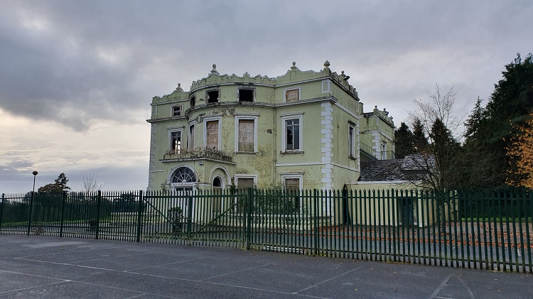

Current State
In November 2010, Hope Castle was set on fire leaving building with major interior damage. In a very short period fire spread through the bar and lounge areas, up the stairs and into the upstair rooms. There were nobody in the building at the time of the fire. But the contents of the hotel including a considerable amount of the furniture and valuable antiques were completely destroyed.
At the time of the incident, it was clear to local Gardaí that the trespassers entered trough the ground floor of the building where the fire was started. It is believed that a local group of teenagers forced in to the building and intentionally started the fire. Although Gardaí questioned juveniles in the town, no persons were ever found guilty of the crime. Estimated damage caused was worth €3.5 million.
Now the building stands fenced off and ruined with no clear information on restoration.
Credit to: ShaneDeery on Youtube, for making this video.